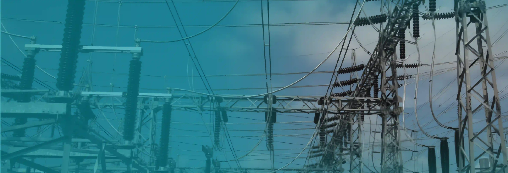

Supervisory Control
Pengawasan grid secara nonstop di seluruh Bali, memastikan setiap anomali terdeteksi secara real-time.

Pengawasan grid secara nonstop di seluruh Bali, memastikan setiap anomali terdeteksi secara real-time.
Perekaman serta analisis data operasi jaringan untuk pengambilan keputusan manajerial yang cepat.
Manuver pembebanan otomatis jarak jauh yang menekan durasi pemadaman listrik secara drastis.
Jaringan komunikasi fiber optik yang andal sebagai tulang punggung sistem kontrol SCADA.
Pengenalan lingkungan kerja, konsep dasar SCADA, serta proses distribusi listrik PLN dari pembangkit hingga pelanggan, termasuk peralatan dan sistem yang digunakan di UP2D Bali.
Penugasan pengembangan sistem pemantauan kubikel elektrik otomatis berbasis kamera dan AI, yang kemudian dinamai "RoboCam" disertai pengamatan langsung di lapangan untuk memahami tantangan operasional yang ada.
Pengembangan dan pengujian RoboCam secara langsung di lapangan untuk memastikan performa optimal, sekaligus mengerjakan proyek pribadi di sela waktu magang.
Evaluasi dan penyempurnaan RoboCam berdasarkan feedback supervisor, serta penyusunan laporan akhir pengalaman magang selama 6 bulan di UP2D Bali.
Karya teknologi yang saya kembangkan selama magang di PLN UP2D Bali yang banyak mencangkup implementasi Artificial Intelligence di berbagai hal, mulai dari penglihatan, deteksi objek, hingga alat bantu untuk AI sebagai Agentic Coding Assistant.